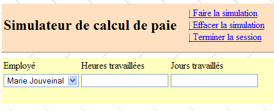
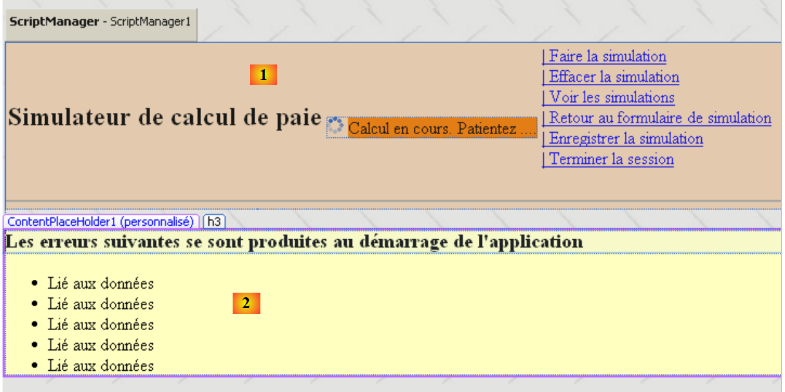

11. La aplicación [SimuPaie] – versión 7 – ASP.NET / multivista / multipágina
Lectura recomendada: referencia [1], Desarrollo web con ASP.NET 1.1, sección: Ejemplos
Ahora estamos analizando una versión que es funcionalmente idéntica a la aplicación ASP.NET de tres capas [pam-v4-3tier-nhibernate-multivues-monopage] comentada anteriormente, pero estamos modificando su arquitectura de la siguiente manera: mientras que en la versión anterior las vistas se implementaban mediante una única página ASPX, aquí se implementarán mediante tres páginas ASPX.
La arquitectura de la aplicación anterior era la siguiente:
 |
Aquí tenemos una arquitectura MVC (Modelo-Vista-Controlador):
- [Default.aspx.cs] contiene el código del controlador. La página [Default.aspx] es el único punto de contacto del cliente. Gestiona todas las solicitudes del cliente.
- [Saisies, Simulation, Simulations, ...] son las vistas. Estas vistas se implementan aquí utilizando componentes [View] en la página [Default.aspx].
La arquitectura de la nueva versión será la siguiente:
 |
- solo cambia la capa [web]
- las vistas (lo que se muestra al usuario) permanecen sin cambios.
- El código del controlador, que en la versión anterior se encontraba íntegramente en [Default.aspx.cs], ahora se distribuye entre varias páginas:
- [MasterPage.master]: una página que encapsula elementos comunes a las diferentes vistas: el banner superior con sus opciones de menú
- [Formulaire.aspx]: la página que muestra el formulario de simulación y gestiona las acciones que tienen lugar en este formulario
- [Simulations.aspx]: la página que muestra la lista de simulaciones y gestiona las acciones que se producen en esta página
- [Errors.aspx]: la página que se muestra cuando se produce un error de inicialización de la aplicación. No es posible realizar ninguna acción en esta página.
Esto puede considerarse una arquitectura MVC de múltiples controladores, mientras que la arquitectura de la versión anterior era una arquitectura MVC de un solo controlador.
El procesamiento de una solicitud del cliente sigue estos pasos:
- El cliente realiza una solicitud a la aplicación. La realiza a una de las dos páginas [Formulaire.aspx, Simulations.aspx].
- La página solicitada procesa esta solicitud. Para ello, puede necesitar la ayuda de la capa [de negocio], que a su vez puede necesitar la capa [DAO] si es necesario intercambiar datos con la base de datos. La aplicación recibe una respuesta de la capa [de negocio].
- En función de esta respuesta, selecciona (3) la vista (= la respuesta) que se enviará al cliente, proporcionándole (4) la información (el modelo) que necesita.
- La respuesta se envía al cliente (5)
11.1. Las vistas de la aplicación
Las diferentes vistas que se muestran al usuario son las siguientes:
- - la vista [VueSaisies], que muestra el formulario de simulación

- - la vista [VueSimulation], que se utiliza para mostrar los resultados detallados de la simulación:

- - la vista [SimulationView], que enumera las simulaciones realizadas por el cliente

- - la vista [EmptySimulationsView], que indica que el cliente no tiene simulaciones o que ya no hay más simulaciones:

- la vista [ErrorView], que indica un error de inicialización de la aplicación:

11.2. Generación de vistas en un contexto de múltiples controladores
En la versión anterior, todas las vistas se generaban desde la página única [Default.aspx]. Esta página contenía dos componentes [MultiView], y las vistas consistían en una combinación de uno o dos componentes [View] pertenecientes a estos dos componentes [MultiView].
Aunque eficaz cuando hay pocas vistas, esta arquitectura alcanza sus límites tan pronto como el número de componentes que forman las distintas vistas se vuelve elevado: de hecho, con cada solicitud realizada a la única página [Default.aspx], se instancian todos sus componentes, aunque solo algunos de ellos se utilicen para generar la respuesta al usuario. Por lo tanto, se realiza un trabajo innecesario con cada nueva solicitud, lo que se convierte en un cuello de botella cuando el número total de componentes de la página es elevado.
Una solución es distribuir las vistas entre diferentes páginas. Eso es lo que estamos haciendo aquí. Examinemos dos casos diferentes de generación de vistas:
- se realiza la solicitud a la página P1, y esta genera la respuesta
- se realiza la solicitud a una página P1, y esta página pide a una página P2 que genere la respuesta
11.2.1. Caso 1: una página de controlador/vista
En el caso 1, volvemos a la arquitectura de controlador único de la versión anterior, donde la página [Default.aspx] es la página P1:
 |
- el cliente realiza una solicitud a la página P1 (1)
- La página P1 procesa esta solicitud. Para ello, puede necesitar la ayuda de la capa [business] (2), que a su vez puede necesitar la capa [DAO] si es necesario intercambiar datos con la base de datos. La aplicación recibe una respuesta de la capa [business].
- En función de esta respuesta, selecciona (3) la vista (= la respuesta) que se enviará al cliente, proporcionándole (4) la información (el modelo) que necesita. Esto implica seleccionar los componentes [Panel] o [View] que se mostrarán en la página P1 e inicializar los componentes que contienen.
- La respuesta se envía al cliente (5)
A continuación se muestran dos ejemplos extraídos de la aplicación objeto de estudio:
[Página Formulaire.aspx]
 |
- en [1]: tras solicitar la página [Formulaire.aspx], el usuario solicita una simulación
- en [2]: la página [Formulaire.aspx] procesó esta solicitud y generó la respuesta por sí misma mostrando un componente [View] que no se había mostrado en [1]
[página Simulations.aspx]
 |
- en [1]: tras solicitar la página [Simulations.aspx], el usuario desea eliminar una simulación
- en [2]: la página [Simulations.aspx] procesó esta solicitud y generó la respuesta por sí misma volviendo a mostrar la nueva lista de simulaciones.
 |
11.2.2. Caso 2: una página con un único controlador, una página de controlador/vista
El caso 2 puede abarcar diversas arquitecturas. Elegiremos la siguiente:
 |
- el cliente realiza una solicitud a la página P1 (1)
- La página P1 procesa esta solicitud. Para ello, puede necesitar la ayuda de la capa [business] (2), que a su vez puede necesitar la capa [DAO] si es necesario intercambiar datos con la base de datos. La aplicación recibe una respuesta de la capa [business].
- Basándose en ello, selecciona (3) la vista (= la respuesta) que se enviará al cliente, proporcionándole (4) la información (la plantilla) que necesita. En este caso, la vista que se va a generar debe ser creada por una página distinta de P1; concretamente, la página P2. Para realizar las operaciones (3) y (4), la página P1 tiene dos opciones:
- Transferir la ejecución a la página P2 mediante la operación [Server.Transfer("P2.aspx")]. En este caso, puede colocar el modelo destinado a la página P2 en el contexto de la solicitud [Context.Items["key"]=valor] o en la sesión del usuario [Session.["key"]=valor]. A continuación, se instanciará la página P2 y, cuando se procese su evento Load, por ejemplo, podrá recuperar la información pasada por la página P1 utilizando las operaciones [value=(Type)Context.Items["key"] o [value=(Type)Session["key"], según corresponda, donde Type es el tipo del valor asociado a la clave. La transmisión de valores a través del Context es más adecuada si no es necesario conservar los valores del modelo para una futura solicitud del cliente.
- Pida al cliente que redirija a la página P2 utilizando la operación [Response.Redirect("P2.aspx")]. En este caso, la página P1 colocará el modelo destinado a la página P2 en la sesión, ya que el contexto de la solicitud se borra al final de cada solicitud. Sin embargo, aquí, la redirección provocará que la primera solicitud del cliente a P1 finalice y desencadene una segunda solicitud del mismo cliente, esta vez a P2. Hay dos solicitudes sucesivas. Sabemos que la sesión es una forma de conservar la «memoria» entre solicitudes. Existen otras soluciones además de la sesión.
- Independientemente de cómo tome el relevo P2, volvemos entonces al caso 1: P2 ha recibido una solicitud que procesará (5) y generará la respuesta por sí misma (6, 7). También podemos imaginar que, tras procesar la solicitud, la página P2 pasará el relevo a la página P3, y así sucesivamente.
He aquí un ejemplo tomado de la aplicación que estamos estudiando:
 |
- en [1]: el usuario que solicitó la página [Formulaire.aspx] pide ver la lista de simulaciones
- en [2]: la página [Formulaire.aspx] procesa esta solicitud y redirige al cliente a la página [Simulations.aspx]. Es esta última la que proporciona la respuesta al usuario. En lugar de pedir al cliente que se redirija, la página [Formulaire.aspx] podría haber reenviado la solicitud del cliente a la página [Simulations.aspx]. En este caso, en [2], habríamos visto la misma URL que en [1]. De hecho, un navegador siempre muestra la última URL solicitada:
- La acción solicitada en [1] está destinada a la página [Formulaire.aspx]. El navegador envía una solicitud POST a esta página.
- Si la página [Formulaire.aspx] procesa la solicitud y luego la reenvía mediante [Server.Transfer("Simulations.aspx")] a la página [Simulations.aspx], seguimos dentro de la misma solicitud. El navegador mostrará entonces en [2] la URL de [Formulaire.aspx] a la que se envió el POST.
- Si la página [Formulaire.aspx] procesa la solicitud y luego la redirige mediante [Response.Redirect("Simulations.aspx")] a la página [Simulations.aspx], el navegador realiza entonces una segunda solicitud, una solicitud GET a [Simulations.aspx]. A continuación, el navegador mostrará en [2] la URL de [Simulations.aspx] a la que se envió la solicitud GET. Esto es lo que nos muestra la captura de pantalla [2] anterior.
11.3. El proyecto de Visual Web Developer para la capa [web]
El proyecto de Visual Web Developer para la capa [web] es el siguiente:
 |
- En [1] encontramos:
- el archivo de configuración de la aplicación [Web.config], que es idéntico al de la aplicación [pam-v4-3tier-nhibernate-multivues-monopage].
- la página [Default.aspx], que simplemente redirige al cliente a la página [Formulaire.aspx]
- la página [Formulaire.aspx], que muestra el formulario de simulación al usuario y gestiona las acciones relacionadas con este formulario
- la página [Simulations.aspx], que muestra al usuario la lista de simulaciones y gestiona las acciones relacionadas con esta página
- La página [Errors.aspx], que muestra al usuario una página indicando un error encontrado al iniciar la aplicación web.
- En [2], vemos las referencias del proyecto.
Volvamos a la arquitectura del nuevo proyecto:
 |
En comparación con el proyecto [pam-v4-3tier-nhibernate-multivues-monopage], solo han cambiado las vistas. Por eso el nuevo proyecto reutiliza algunos de los archivos de aquel proyecto:
- el archivo de configuración [Web.config]
- las DLL referenciadas [pam-dao-nhibernate, pam-metier-dao-nhibernate, Spring.Core, NHibernate]
- la clase de aplicación global [Global.asax]
- las carpetas [images, resources, pam]
Para mantener la coherencia con el proyecto que se está desarrollando actualmente, nos aseguraremos de que el espacio de nombres de las vistas y de la clase de aplicación global sea [pam-v7]:
 |
11.4. El código de presentación de la página
11.4.1. La página maestra [MasterPage.master]
Las vistas de la aplicación presentadas en la sección 11.1 tienen elementos comunes que pueden integrarse en una página maestra, conocida como Master Page en Visual Studio. Tomemos, por ejemplo, las vistas [VueSaisies] y [VueSimulationsVides] que se muestran a continuación, generadas respectivamente por las páginas [Formulaire.aspx] y [Simulations.aspx]:
 |
Estas dos vistas comparten el banner superior (título y opciones de menú). Esto es así en todas las vistas que se mostrarán al usuario: todas tendrán el mismo banner superior. Para permitir que diferentes páginas compartan el mismo fragmento de presentación, existen varias soluciones, entre las que se incluyen las siguientes:
- Colocar este fragmento común en un control de usuario. Esta era la técnica principal en ASP.NET 1.1
- Colocar este fragmento común en una página maestra. Esta técnica se introdujo con ASP.NET 2.0. Es la que estamos utilizando aquí.
Para crear una página maestra en una aplicación web, sigue estos pasos:
- Haga clic con el botón derecho del ratón en el proyecto / Agregar nuevo elemento / Página maestra:
 |
Al añadir una página maestra, se añaden tres archivos a la aplicación web de forma predeterminada:
- [MasterPage.master]: el código de diseño de la página maestra
- [MasterPage.master.cs]: el código de control de la página maestra
- [MasterPage.Master.Designer.cs]: las declaraciones de componentes de la página maestra
El código generado por Visual Studio en [MasterPage.master] es el siguiente:
<%@ Master Language="C#" AutoEventWireup="true" CodeBehind="MasterPage.master.cs" Inherits="pam_v7.MasterPage" %>
<!DOCTYPE html PUBLIC "-//W3C//DTD XHTML 1.0 Transitional//EN" "http://www.w3.org/TR/xhtml1/DTD/xhtml1-transitional.dtd">
<html xmlns="http://www.w3.org/1999/xhtml">
<head runat="server">
<title>Untitled Page</title>
<asp:ContentPlaceHolder id="head" runat="server">
</asp:ContentPlaceHolder>
</head>
<body>
<form id="form1" runat="server">
<div>
<asp:ContentPlaceHolder id="ContentPlaceHolder1" runat="server">
</asp:ContentPlaceHolder>
</div>
</form>
</body>
</html>
- Línea 1: La etiqueta <%@ Master ... %> se utiliza para definir la página como página maestra. El código de control de la página se encontrará en el archivo especificado por el atributo CodeBehind, y la página heredará de la clase especificada por el atributo Inherits.
- Líneas 12-18: El formulario de la página maestra
- Líneas 14-16: Un contenedor vacío que, en nuestra aplicación, contendrá una de las páginas [Form.aspx, Simulations.aspx, Errors.aspx]. El cliente siempre recibe la misma página como respuesta —la página maestra— en la que el contenedor [ContentPlaceHolder1] recibirá un flujo HTML proporcionado por una de las páginas [Form.aspx, Simulations.aspx, Errors.aspx]. Por lo tanto, para cambiar la apariencia de las páginas enviadas a los clientes, basta con cambiar la apariencia de la página maestra.
- Líneas 8–9: un contenedor vacío que permite a las páginas «hijas» personalizar el encabezado <head>...</head>.
La representación visual (pestaña Diseño) de este código fuente se muestra en (1) a continuación. Además, puede añadir tantos contenedores como desee utilizando el componente [ContentPlaceHolder] (2) de la barra de herramientas [Estándar].
 |
El código de control generado por Visual Studio en [MasterPage.master.cs] es el siguiente:
using System;
public partial class MasterPage : System.Web.UI.MasterPage
{
protected void Page_Load(object sender, EventArgs e)
{
}
}
- Línea 3: La clase a la que hace referencia el atributo [Inherits] de la directiva <%@ Master ... %> en la página [MasterPage.master] deriva de la clase [System.Web.UI.MasterPage]
Arriba vemos la presencia del método Page_Load, que gestiona el evento Load de la página maestra. La página maestra contendrá otra página en su interior. ¿En qué orden se producen los eventos Load de las dos páginas? Esta es una regla general: el evento Load de un componente se produce antes que el de su contenedor. Por lo tanto, en este caso, el evento Load de la página incrustada en la página maestra se producirá antes que el de la propia página maestra.
Para generar una página en que utilice la página anterior [MasterPage.master] como su página maestra, puede proceder de la siguiente manera:
 |
- en [1]: haz clic con el botón derecho del ratón en la página maestra y, a continuación, selecciona [Añadir página de contenido]
- en [2]: se genera una página predeterminada, en este caso [WebForm1.aspx].
El código de presentación de [WebForm1.aspx] es el siguiente:
<%@ Page Title="" Language="C#" MasterPageFile="~/MasterPage.Master" AutoEventWireup="true" CodeBehind="WebForm1.aspx.cs" Inherits="pam_v7.WebForm1" %>
<asp:Content ID="Content1" ContentPlaceHolderID="ContentPlaceHolder1" runat="server">
</asp:Content>
- Línea 1: La directiva Page y sus atributos
- MasterPageFile: especifica el archivo de página maestra para la página descrita por la directiva. El símbolo ~ denota la carpeta del proyecto.
- Los demás parámetros son los habituales en una página web ASP
- Líneas 2–3: Las etiquetas <asp:Content> se vinculan una a una a las directivas <asp:ContentPlaceHolder> de la página maestra a través del atributo ContentPlaceHolderID. Los componentes situados entre las líneas 2 y 3 anteriores se colocarán, en tiempo de ejecución, en el contenedor ContentPlaceHolder1 de la página maestra.
Al renombrar la página [WebForm1.aspx] generada de esta manera, podemos crear las distintas páginas utilizando [MasterPage.master] como página maestra.
Para nuestra aplicación [SimuPaie], el aspecto visual de la página maestra será el siguiente:
 |
N.º | Tipo | Nombre | Función |
Panel (rosa arriba) | encabezado | encabezado de página | |
Panel (amarillo arriba) | contenido | contenido de la página | |
Botón de enlace | LinkButtonRunSimulation | solicita el cálculo de la simulación | |
Botón de enlace | LinkButtonClearSimulation | borra el formulario de entrada | |
Botón de enlace | LinkButtonViewSimulations | muestra la lista de simulaciones ya realizadas | |
Botón de enlace | LinkButtonSimulationForm | vuelve al formulario de entrada | |
Botón de enlace | LinkButtonSaveSimulation | guarda la simulación actual en la lista de simulaciones | |
Botón de enlace | LinkButtonEndSession | finaliza la sesión actual |
El código fuente correspondiente es el siguiente:
<%@ Master Language="C#" AutoEventWireup="true" CodeBehind="MasterPage.master.cs" Inherits="pam_v7.MasterPage" %>
<!DOCTYPE html PUBLIC "-//W3C//DTD XHTML 1.0 Transitional//EN" "http://www.w3.org/TR/xhtml1/DTD/xhtml1-transitional.dtd">
<html xmlns="http://www.w3.org/1999/xhtml">
<head id="Head1" runat="server">
<title>Application PAM</title>
</head>
<body background="ressources/standard.jpg">
<form id="form1" runat="server">
<asp:ScriptManager ID="ScriptManager1" runat="server" EnablePartialRendering="true" />
<asp:UpdatePanel runat="server" ID="UpdatePanelPam" UpdateMode="Conditional">
<ContentTemplate>
<asp:Panel ID="entete" runat="server" BackColor="#FFE0C0">
<table>
<tr>
<td>
<h2>
Simulateur de calcul de paie</h2>
</td>
<td>
<label>
 </label>
<asp:UpdateProgress ID="UpdateProgress1" runat="server">
<ProgressTemplate>
<img alt="" src="images/indicator.gif" />
<asp:Label ID="Label5" runat="server" BackColor="#FF8000"
EnableViewState="False" Text="Calcul en cours. Patientez ....">
</asp:Label>
</ProgressTemplate>
</asp:UpdateProgress>
</td>
<td>
<asp:LinkButton ID="LinkButtonFaireSimulation" runat="server"
CausesValidation="False">| Faire la simulation<br />
</asp:LinkButton>
<asp:LinkButton ID="LinkButtonEffacerSimulation" runat="server"
CausesValidation="False">| Effacer la simulation<br />
</asp:LinkButton>
<asp:LinkButton ID="LinkButtonVoirSimulations" runat="server"
CausesValidation="False">| Voir les simulations<br />
</asp:LinkButton>
<asp:LinkButton ID="LinkButtonFormulaireSimulation" runat="server"
CausesValidation="False">| Retour au formulaire de simulation<br />
</asp:LinkButton>
<asp:LinkButton ID="LinkButtonEnregistrerSimulation" runat="server"
CausesValidation="False">| Enregistrer la simulation<br />
</asp:LinkButton>
<asp:LinkButton ID="LinkButtonTerminerSession" runat="server"
CausesValidation="False">| Terminer la session<br />
</asp:LinkButton>
</td>
</tr>
</table>
<hr />
</asp:Panel>
<div>
<asp:Panel ID="contenu" runat="server" BackColor="#FFFFC0">
<asp:ContentPlaceHolder ID="ContentPlaceHolder1" runat="server">
</asp:ContentPlaceHolder>
</asp:Panel>
</div>
</ContentTemplate>
</asp:UpdatePanel>
</form>
</body>
</html>
- Línea 1: Fíjate en el nombre de la clase de la página maestra: MasterPage
- Línea 8: Define una imagen de fondo para la página.
- Líneas 9–64: el formulario
- Línea 10: El componente ScriptManager necesario para los efectos Ajax
- Líneas 11–63: el contenedor AJAX
- Líneas 12–62: el contenido habilitado para Ajax
- Líneas 13-55: el componente Panel [encabezado]
- Líneas 57-60: el componente Panel [contenido]
- Líneas 58-59: el componente [ContentPlaceHolder1], que contendrá la página encapsulada [Formulaire.aspx, Simulations.aspx, Erreurs.aspx]
Para crear esta página, podemos insertar en el panel [header] el código ASPX de la vista [HeaderView] de la página [Default.aspx] de la versión [pam-v4-3tier-nhibernate-multivues-monopage], descrita en la sección 8.5.2.
11.4.2. La página [Formulaire.aspx]
Para generar esta página, siga el método descrito en la sección 11.4.1 y cambie el nombre de la página [WebForm1.aspx] generada a [Form.aspx]. El aspecto visual de la página [Form.aspx] en construcción será el siguiente:
 |
El aspecto visual de la página [Formulaire.aspx] consta de dos elementos:
- [1] la página maestra con su contenedor [ContentPlaceHolder1] (2)
- [2] los componentes colocados en el contenedor [ContentPlaceHolder1]. Estos son idénticos a los de la aplicación anterior.
El código fuente de esta página es el siguiente:
<%@ Page Language="C#" MasterPageFile="~/MasterPage.master" AutoEventWireup="true"
CodeBehind="Formulaire.aspx.cs" Inherits="pam_v7.PageFormulaire" Title="Simulation de calcul de paie : formulaire" %>
<%@ MasterType VirtualPath="~/MasterPage.master" %>
<asp:Content ID="Content1" ContentPlaceHolderID="ContentPlaceHolder1" runat="Server">
<div>
<table>
<tr>
<td>
Employé
</td>
<td>
Heures travaillées
</td>
<td>
Jours travaillés
</td>
<td>
</td>
</tr>
...
</asp:Content>
- Línea 1: La directiva Page con su atributo MasterPageFile
- línea 4: la clase de control de la página maestra puede exponer campos y propiedades públicos. Se puede acceder a ellos desde las páginas encapsuladas utilizando la sintaxis Master.[campo] o Master.[propiedad]. La propiedad Master de la página hace referencia a la página maestra como una instancia de tipo [System.Web.UI.MasterPage]. Por lo tanto, en nuestro ejemplo, deberíamos escribir en realidad (MasterPage)(Master).[campo] o (MasterPage)(Master).[propiedad]. Este tipo de conversión se puede evitar insertando la directiva MasterType de la línea 4 en la página. El atributo VirtualPath de esta directiva especifica el archivo de la página maestra. El compilador puede entonces reconocer los campos públicos, las propiedades y los métodos expuestos por la clase de la página maestra, en este caso de tipo [MasterPage].
- Líneas 5-22: el contenido que se insertará en el contenedor [ContentPlaceHolder1] de la página maestra.
Esta página se puede crear estableciendo su contenido (líneas 6-21) en el de la vista [VueSaisies] descrita en la sección 8.5.3 y el de la vista [VueSimulation] descrita en la sección 8.5.4.
11.4.3. La página [Simulations.aspx]
Para generar esta página, siga el método descrito en la sección 11.4.1 y cambie el nombre de la página resultante [WebForm1.aspx] a [Simulations.aspx]. El aspecto visual de la página [Simulations.aspx], actualmente en construcción, es el siguiente:
 |
El aspecto visual de la página [Simulations.aspx] consta de dos elementos:
- [1] la página maestra con su contenedor [ContentPlaceHolder1]
- en [2] los componentes colocados en el contenedor [ContentPlaceHolder1]. Son idénticos a los de la aplicación anterior.
El código fuente de esta página es el siguiente:
<%@ Page Language="C#" MasterPageFile="~/MasterPage.master" AutoEventWireup="true"
CodeBehind="Simulations.aspx.cs" Inherits="pam_v7.PageSimulations" Title="Pam : liste des simulations" %>
<%@ MasterType VirtualPath="~/MasterPage.master" %>
<asp:Content ID="Content1" ContentPlaceHolderID="ContentPlaceHolder1" runat="Server">
<asp:MultiView ID="MultiView1" runat="server">
<asp:View ID="View1" runat="server">
<h2>
Liste de vos simulations</h2>
<p>
<asp:GridView ID="GridViewSimulations" runat="server" ...>
...
</asp:GridView>
</p>
</asp:View>
<asp:View ID="View2" runat="server">
<h2>
La liste de vos simulations est vide</h2>
</asp:View>
</asp:MultiView><br />
</asp:Content>
Podemos crear esta página estableciendo su contenido (líneas 5–21) en el de la vista [VueSimulations] descrita en la sección 8.5.5 y en el de la vista [VueSimulationsVides] descrita en la sección 8.5.6.
11.4.4. La página [Errors.aspx]
Para generar esta página, siga el método descrito en la sección 11.4.1 y cambie el nombre de la página resultante [WebForm1.aspx] a [Errors.aspx]. El aspecto visual de la página [Errors.aspx] que se está creando actualmente es el siguiente:
 |
El aspecto visual de la página [Errors.aspx] consta de dos elementos:
- [1] la página maestra con su contenedor [ContentPlaceHolder1]
- [2] los componentes colocados en el contenedor [ContentPlaceHolder1]. Estos son idénticos a los de la aplicación anterior.
El código fuente de esta página es el siguiente:
<%@ Page Language="C#" MasterPageFile="~/MasterPage.master" AutoEventWireup="true"
CodeBehind="Erreurs.aspx.cs" Inherits="pam_v7.PageErreurs" Title="Pam : erreurs" %>
<%@ MasterType VirtualPath="~/MasterPage.master" %>
<asp:Content ID="Content1" ContentPlaceHolderID="ContentPlaceHolder1" Runat="Server">
<h3>Les erreurs suivantes se sont produites au démarrage de l'application</h3>
<ul>
<asp:Repeater id="rptErreurs" runat="server">
<ItemTemplate>
<li>
<%# Container.DataItem %>
</li>
</ItemTemplate>
</asp:Repeater>
</ul>
</asp:Content>
11.5. Código de control de página
11.5.1. Descripción general
Volvamos a la arquitectura de la aplicación:
 |
- [Global] es el objeto [HttpApplication] que inicializa (paso 0) la aplicación. Esta clase es idéntica a la de la versión anterior.
- El código del controlador, que en la versión anterior se encontraba íntegramente en [Default.aspx.cs], ahora se distribuye en varias páginas:
- [MasterPage.master]: la página maestra para [Form.aspx, Simulations.aspx, Errors.aspx]. Contiene el menú.
- [Formulaire.aspx]: la página que muestra el formulario de simulación y gestiona las acciones realizadas en este formulario
- [Simulations.aspx]: la página que muestra la lista de simulaciones y gestiona las acciones que se producen en esta página
- [Errors.aspx]: la página que se muestra cuando se produce un error de inicialización de la aplicación. No es posible realizar ninguna acción en esta página.
El procesamiento de una solicitud del cliente sigue estos pasos:
- El cliente realiza una solicitud a la aplicación. Normalmente lo hace en una de las dos páginas [Form.aspx, Simulations.aspx], pero nada le impide solicitar la página [Errors.aspx]. Este escenario debe tenerse en cuenta.
- La página solicitada procesa esta solicitud (paso 1). Para ello, puede necesitar la ayuda de la capa [business] (paso 2), que a su vez puede necesitar la capa [DAO] si es necesario intercambiar datos con la base de datos. La aplicación recibe una respuesta de la capa [business].
- Basándose en ello, selecciona (paso 3) la vista (= la respuesta) que se enviará al cliente y le proporciona (paso 4) la información (el modelo) que necesita. Hemos visto tres posibilidades para generar esta respuesta:
- la página solicitada (D) es también la página (R) enviada como respuesta. La construcción del modelo de respuesta (R) consiste entonces en asignar a ciertos componentes de la página (D) los valores que deben tener en la respuesta.
- La página solicitada (D) no es la página (R) enviada como respuesta. La página (D) puede entonces:
- Transferir el flujo de ejecución a la página (R) utilizando la instrucción Server.Transfer(" R "). A continuación, el modelo puede colocarse en el contexto utilizando Context.Items("key")=value o, con menos frecuencia, en la sesión utilizando Session.Items("key")=value
- Redirigir al cliente a la página (R) utilizando la instrucción Response.redirect(" R "). El modelo puede entonces colocarse en la sesión, pero no en el contexto.
- La respuesta se envía al cliente (paso 5)
Cada una de las páginas [MasterPage.master, Form.aspx, Simulations.aspx, Errors.aspx] responderá a uno o varios de los siguientes eventos:
- Init: primer evento del ciclo de vida de la página
- Load: se produce cuando se carga la página
- Click: un clic en uno de los enlaces del menú de la página maestra
Procesamos las páginas una tras otra, empezando por la página maestra.
11.5.2. Código de control para la página [MasterPage.master]
11.5.2.1. Estructura de la clase
El código de control de la página maestra tiene el siguiente esqueleto:
using System.Web.UI.WebControls;
namespace pam_v7
{
public partial class MasterPage : System.Web.UI.MasterPage
{
// the menu
public LinkButton OptionFaireSimulation
{
get { return LinkButtonFaireSimulation; }
}
...
// set menu
public void SetMenu(bool boolFaireSimulation, bool boolEnregistrerSimulation, bool boolEffacerSimulation, bool boolFormulaireSimulation, bool boolVoirSimulations, bool boolTerminerSession)
{
....
}
// managing the [End session] option
protected void LinkButtonTerminerSession_Click(object sender, System.EventArgs e)
{
....
}
// init master page
protected void Page_Init(object sender, System.EventArgs e)
{
....
}
}
}
}
- línea 5: la clase se llama [MasterPage] y deriva de la clase del sistema [System.Web.UI.MasterPage].
- líneas 9–14: las 6 opciones del menú se exponen como propiedades públicas de la clase
- líneas 16–19: el método público SetMenu permite a las páginas [Formulaire.aspx, Simulations.aspx, Erreurs.aspx] configurar el menú de la página maestra
- líneas 22–25: el procedimiento que gestiona el clic en el enlace [LinkButtonTerminerSession]
- Líneas 28-31: el procedimiento que gestiona el evento Init de la página maestra
11.5.2.2. Propiedades públicas de la clase
using System.Web.UI.WebControls;
namespace pam_v7
{
public partial class MasterPage : System.Web.UI.MasterPage
{
// the menu
public LinkButton OptionFaireSimulation
{
get { return LinkButtonFaireSimulation; }
}
public LinkButton OptionEffacerSimulation
{
get { return LinkButtonEffacerSimulation; }
}
public LinkButton OptionEnregistrerSimulation
{
get { return LinkButtonEnregistrerSimulation; }
}
public LinkButton OptionVoirSimulations
{
get { return LinkButtonVoirSimulations; }
}
public LinkButton OptionTerminerSession
{
get { return LinkButtonTerminerSession; }
}
public LinkButton OptionFormulaireSimulation
{
get { return LinkButtonFormulaireSimulation; }
}
...
}
}
Para entender este código, debes recordar los componentes que conforman la página maestra:
 |
N.º | Tipo | Nombre | Función |
Panel (rosa arriba) | encabezado | encabezado de página | |
Panel (amarillo arriba) | contenido | contenido de la página | |
Botón de enlace | Botón de enlace Ejecutar simulación | Solicitar cálculo de simulación | |
Botón de enlace | Botón de enlace Borrar simulación | borra el formulario de entrada | |
Botón de enlace | LinkButtonViewSimulations | muestra la lista de simulaciones ya realizadas | |
Botón de enlace | LinkButtonSimulationForm | vuelve al formulario de entrada | |
Botón de enlace | LinkButtonSaveSimulation | guarda la simulación actual en la lista de simulaciones | |
LinkButton | LinkButtonEndSession | finaliza la sesión actual |
No se puede acceder a los componentes del 1 al 6 fuera de la página que los contiene. Las propiedades de las líneas 9 a 37 tienen por objeto hacerlos accesibles a clases externas, en este caso las clases de las demás páginas de la aplicación.
11.5.2.3. El método SetMenu
El método público SetMenu permite a las páginas [Formulaire.aspx, Simulations.aspx, Erreurs.aspx] configurar el menú de la página maestra. Su código es básico:
// fixer le menu
public void SetMenu(bool boolFaireSimulation, bool boolEnregistrerSimulation, bool boolEffacerSimulation, bool boolFormulaireSimulation, bool boolVoirSimulations, bool boolTerminerSession)
{
// on fixe les options de menu
LinkButtonFaireSimulation.Visible = boolFaireSimulation;
LinkButtonEnregistrerSimulation.Visible = boolEnregistrerSimulation;
LinkButtonEffacerSimulation.Visible = boolEffacerSimulation;
LinkButtonVoirSimulations.Visible = boolVoirSimulations;
LinkButtonFormulaireSimulation.Visible = boolFormulaireSimulation;
LinkButtonTerminerSession.Visible = boolTerminerSession;
}
11.5.2.4. Gestión de eventos en la página maestra
La página maestra gestionará dos eventos:
- el evento Init, que es el primer evento del ciclo de vida de la página
- el evento Click en el enlace [LinkButtonTerminerSession]
La página maestra tiene otros cinco enlaces: [LinkButtonRunSimulation, LinkButtonSaveSimulation, LinkButtonClearSimulation, LinkButtonViewSimulations, LinkButtonSimulationForm]. A modo de ejemplo, veamos qué hay que hacer cuando se hace clic en el enlace [LinkButtonRunSimulation]:
- verificar los datos introducidos (horas, días) en la página [Form.aspx]
- calcular el salario
- mostrar los resultados en la página [Form.aspx]
Los pasos 1 y 3 requieren acceso a los componentes de la página [Form.aspx]. Este no es el caso. De hecho, la página maestra no tiene conocimiento de los componentes de las páginas que pueden insertarse en su contenedor [ContentPlaceHolder1]. En nuestro ejemplo, corresponde a la página [Formulaire.aspx] gestionar el clic en el enlace [LinkButtonFaireSimulation], ya que es la página que se muestra cuando se produce este evento. ¿Cómo se le puede notificar este evento?
- Dado que el enlace [LinkButtonFaireSimulation] no forma parte de la página [Formulaire.aspx], no podemos escribir el procedimiento habitual en [Formulaire.aspx]:
private void LinkButtonFaireSimulation_Click(object sender, System.EventArgs e)
{
...
}
Puedes solucionar el problema con el siguiente código en [Formulaire.aspx]:
using System.Collections.Generic;
...
namespace pam_v7
{
public partial class Formulaire : System.Web.UI.Page
{
// page loading
protected void Page_Load(object sender, System.EventArgs e)
{
// event manager
Master.OptionFaireSimulation.Click += OptFaireSimulation_Click;
Master.OptionEffacerSimulation.Click += OptEffacerSimulation_Click;
Master.OptionVoirSimulations.Click += OptVoirSimulations_Click;
Master.OptionEnregistrerSimulation.Click += OptEnregistrerSimulation_Click;
...
}
// payroll calculation
private void OptFaireSimulation_Click(object sender, System.EventArgs e)
{
....
}
// delete simulation
private void OptEffacerSimulation_Click(object sender, System.EventArgs e)
{
...
}
protected void OptVoirSimulations_Click(object sender, System.EventArgs e)
{
...
}
protected void OptEnregistrerSimulation_Click(object sender, System.EventArgs e)
{
...
}
}
}
- líneas 12–15: Cuando se produce el evento Load de la página [Formulaire.aspx], la clase [MasterPage] de la página maestra ya se ha instanciado. Sus propiedades públicas Optionxx son accesibles y son de tipo LinkButton, un componente que admite el evento Click. Asociamos los siguientes métodos a estos eventos Click:
- OptFaireSimulation_Click para el evento Click del enlace LinkButtonFaireSimulation
- OptEffacerSimulation_Click para el evento Click del enlace LinkButtonEffacerSimulation
- OptVoirSimulations_Click para el evento Click del enlace LinkButtonVoirSimulations
- OptEnregistrerSimulation_Click para el evento Click del enlace LinkButtonEnregistrerSimulation
El manejo de los eventos de clic en los seis enlaces del menú se distribuirá de la siguiente manera:
- la página [Formulaire.aspx] gestionará los enlaces [LinkButtonRunSimulation, LinkButtonSaveSimulation, LinkButtonClearSimulation, LinkButtonViewSimulations]
- la página [Simulations.aspx] gestionará el enlace [LinkButtonSimulationForm]
- la página maestra [MasterPage.master] gestionará el enlace [LinkButtonEndSession]. Para este evento, no es necesario que sepa qué página encapsula.
11.5.2.5. El evento Init de la página maestra
Las tres páginas [Form.aspx, Simulations.aspx, Errors.aspx] de la aplicación utilizan [MasterPage.master] como su página maestra. Llamemos a la página maestra M y a la página encapsulada E. Cuando el cliente solicita la página E, se producen los siguientes eventos en orden:
- E.Init
- M.Init
- E.Load
- M.Load
- ...
Utilizaremos el evento Init de la página M para ejecutar el código que debe ejecutarse lo antes posible, independientemente de la página de destino E. Para identificar este código, repasemos la descripción general de la aplicación:
 |
Arriba, [Global] es el objeto [HttpApplication] que inicializa la aplicación. Esta clase es la misma que en la versión [pam-v4-3tier-nhibernate-multivues-monopage]:
using System;
...
namespace pam_v7
{
public class Global : System.Web.HttpApplication
{
// --- static application data ---
public static Employe[] Employes;
public static IPamMetier PamMetier = null;
public static string Msg;
public static bool Erreur = false;
// application startup
public void Application_Start(object sender, EventArgs e)
{
...
}
public void Session_Start(object sender, EventArgs e)
{
...
}
}
}
Si la clase [Global] no consigue inicializar la aplicación correctamente, establece dos variables públicas estáticas:
- la variable booleana Error de la línea 12 se establece en true
- la variable `Msg` de la línea 11 contiene un mensaje con detalles sobre el error detectado
Cuando un usuario solicita una de las páginas [Form.aspx, Simulations.aspx] y la aplicación no se ha inicializado correctamente, dicha solicitud debe reenviarse o redirigirse a la página [Errors.aspx], que mostrará el mensaje de error de la clase [Global]. Hay varias formas de gestionar esta situación:
- Realizar la comprobación de errores de inicialización en el controlador de eventos Init o Load de cada una de las páginas [Formulaire.aspx, Simulations.aspx]
- Realizar la comprobación de errores de inicialización en el controlador de eventos Init o Load de la página maestra de estas dos páginas. Este método tiene la ventaja de situar la comprobación de errores de inicialización en una única ubicación.
Hemos optado por realizar la comprobación de errores de inicialización en el controlador de eventos Init de la página maestra:
protected void Page_Init(object sender, System.EventArgs e)
{
// event manager
LinkButtonTerminerSession.Click += LinkButtonTerminerSession_Click;
// initialization errors?
if (Global.Erreur)
{
// is the encapsulated page the error page?
bool isPageErreurs =...;
// if the error page is displayed, leave it alone, otherwise redirect the client to the error page
if (!isPageErreurs)
Response.Redirect("Erreurs.aspx");
return;
}
}
El código anterior se ejecutará tan pronto como se solicite una de las páginas [Form.aspx, Simulations.aspx, Errors.aspx]. Si la página solicitada es [Form.aspx] o [Simulations.aspx], simplemente (línea 12) redirigimos al cliente a la página [Errors.aspx], que muestra el mensaje de error de la clase [Global]. Si la página solicitada es [Errors.aspx], esta redirección no debe producirse: debe mostrarse la página [Errors.aspx]. Por lo tanto, necesitamos saber, dentro del método [Page_Init] de la página maestra, qué página encapsula.
Revisemos el árbol de componentes de la página maestra:
...
<body background="ressources/standard.jpg">
<form id="form1" runat="server">
<asp:Panel ID="entete" runat="server" BackColor="#FFE0C0" Width="1239px" >
...
</asp:Panel>
<div>
<asp:Panel ID="contenu" runat="server" BackColor="#FFFFC0">
<asp:ContentPlaceHolder ID="ContentPlaceHolder1" runat="server">
</asp:ContentPlaceHolder>
</asp:Panel>
</div>
</form>
</body>
</html>
- líneas 1-13: el contenedor con el ID «form1»
- líneas 4-6: el contenedor con el ID «entete», incluido en el contenedor con el ID «form1»
- líneas 8-11: el contenedor con el id «content», incluido en el contenedor con el id «form1»
- líneas 9-10: el contenedor con el identificador «ContentPlaceHolder1», incluido en el contenedor con el identificador «content»
Una página E incrustada en la página maestra M se encuentra dentro del contenedor con el id «ContentPlaceHolder1». Para hacer referencia a un componente con el id C en esta página E, escribiríamos:
this.FindControl("form1").FindControl("contenu").FindControl("ContentPlaceHolder1").FindControl("C");
El árbol de componentes de la página [Errors.aspx] es el siguiente:
<%@ Page Language="C#" MasterPageFile="~/MasterPage.master" AutoEventWireup="true"
CodeBehind="Erreurs.aspx.cs" Inherits="pam_v7.PageErreurs" Title="Pam : erreurs" %>
<%@ MasterType VirtualPath="~/MasterPage.master" %>
<asp:Content ID="Content1" ContentPlaceHolderID="ContentPlaceHolder1" Runat="Server">
<h3>Les erreurs suivantes se sont produites au démarrage de l'application</h3>
<ul>
<asp:Repeater id="rptErreurs" runat="server">
<ItemTemplate>
<li>
<%# Container.DataItem %>
</li>
</ItemTemplate>
</asp:Repeater>
</ul>
</asp:Content>
Cuando la página [Errors.aspx] se fusiona con la página maestra M, el contenido de la etiqueta <asp:Content> anterior (líneas 5-16) se integra en la etiqueta <asp:ContentPlaceHolder> con el ID «ContentPlaceholder1» de la página M, lo que da como resultado el siguiente árbol de componentes:
- Línea 12: El componente [rptErrors] se puede utilizar para determinar si la página maestra M contiene o no la página [Errors.aspx]. Este componente solo existe en esta página.
Estas explicaciones son suficientes para comprender el código del procedimiento [Page_Init] en la página maestra:
protected void Page_Init(object sender, System.EventArgs e)
{
// event manager
LinkButtonTerminerSession.Click += LinkButtonTerminerSession_Click;
// initialization errors?
if (Global.Erreur)
{
// is the encapsulated page the error page?
bool isPageErreurs = this.FindControl("form1").FindControl("contenu").FindControl("ContentPlaceHolder1").FindControl("rptErreurs") != null;
// if the error page is displayed, leave it alone, otherwise redirect the client to the error page
if (!isPageErreurs)
Response.Redirect("Erreurs.aspx");
return;
}
}
- Línea 4: Asociamos un controlador de eventos al evento Click del enlace LinkButtonTerminerSession. Este controlador se encuentra en la clase MasterPage.
- Línea 6: Comprobamos si la clase [Global] ha establecido su valor booleano Error
- Línea 9: si es así, el valor booleano IsPageErrors indica si la página encapsulada en la página maestra es la página [Errors.aspx]
- Línea 12: si la página encapsulada en la página maestra no es la página [Errors.aspx], se redirige al cliente a esa página; de lo contrario, no se realiza ninguna acción.
11.5.2.6. El evento Click del enlace [LinkButtonTerminerSession]
 |
Cuando el usuario hace clic en el enlace [End Session] de la vista (1) anterior, se debe borrar el contenido de la sesión y mostrar un formulario vacío (2).
El código para el controlador de este evento podría ser el siguiente:
protected void LinkButtonTerminerSession_Click(object sender, System.EventArgs e)
{
// quit session
Session.Abandon();
// the [form] view is displayed
Response.Redirect("Formulaire.aspx");
}
- Línea 4: Se abandona la sesión actual
- línea 6: el cliente es redirigido a la página [Form.aspx]
Podemos ver que este código no implica a ninguno de los componentes de las páginas [Form.aspx, Simulations.aspx, Errors.aspx]. Por lo tanto, el evento puede ser gestionado por la propia página maestra.
11.5.3. Código de control para la página [Errors.aspx]
El código de control de la página [Errors.aspx] podría ser el siguiente:
using System.Collections.Generic;
namespace pam_v7
{
public partial class Erreurs : System.Web.UI.Page
{
protected void Page_Load(object sender, System.EventArgs e)
{
// initialization errors?
if (Global.Erreur)
{
// prepare the template for the [errors] page
List<string> erreursInitialisation = new List<string>();
erreursInitialisation.Add(Global.Msg);
// associate the error list with its component
rptErreurs.DataSource = erreursInitialisation;
rptErreurs.DataBind();
}
// set the menu
Master.SetMenu(false, false, false, false, false, false);
}
}
}
Recuerde que la página [Errors.aspx] tiene como único propósito mostrar un error de inicialización de la aplicación cuando se produce uno:
- línea 10: comprobamos si la inicialización ha finalizado con un error
- líneas 13-14: si es así, el mensaje de error (Global.Msg) se coloca en una lista [InitializationErrors]
- líneas 16-17: se indica al componente [rptErrors] que muestre esta lista
- línea 20: en todos los casos (haya error o no), no se muestran las opciones del menú de la página maestra, por lo que el usuario no puede iniciar ninguna acción nueva desde esta página.
¿Qué ocurre si el usuario solicita directamente la página [Errors.aspx] (algo que no debería hacer durante el uso normal de la aplicación)? Al examinar el código de [MasterPage.master.cs] y [Errors.aspx.cs], veremos que:
- si se produjo un error de inicialización, se muestra
- si no hubo ningún error de inicialización, el usuario recibe una página que contiene solo el encabezado de [MasterPage.master] sin que se muestren opciones de menú.
11.5.4. Código de control para la página [Formulaire.aspx]
11.5.4.1. Esqueleto de la clase
El esqueleto del código de control de la página [Form.aspx] podría ser el siguiente:
using Pam.Metier.Entites;
...
partial class PageFormulaire : System.Web.UI.Page
{
// page loading
protected void Page_Load(object sender, System.EventArgs e)
{
// event manager
Master.OptionFaireSimulation.Click += OptFaireSimulation_Click;
Master.OptionEffacerSimulation.Click += OptEffacerSimulation_Click;
Master.OptionVoirSimulations.Click += OptVoirSimulations_Click;
Master.OptionEnregistrerSimulation.Click += OptEnregistrerSimulation_Click;
....
}
// payroll calculation
private void OptFaireSimulation_Click(object sender, System.EventArgs e)
{
....
}
// delete simulation
private void OptEffacerSimulation_Click(object sender, System.EventArgs e)
{
...
}
protected void OptVoirSimulations_Click(object sender, System.EventArgs e)
{
....
}
protected void OptEnregistrerSimulation_Click(object sender, System.EventArgs e)
{
...
}
}
El código de control de la página [Formulaire.aspx] gestiona cinco eventos:
- el evento Load de la página
- el evento Click del enlace [LinkButtonRunSimulation] de la página maestra
- el evento Click del enlace [LinkButtonClearSimulation] de la página maestra
- el evento Click del enlace [LinkButtonEnregistrerSimulation] de la página maestra
- el evento Click del enlace [LinkButtonViewSimulations] de la página maestra
11.5.4.2. Evento de carga de página
El esqueleto del controlador del evento de carga de la página podría ser el siguiente:
protected void Page_Load(object sender, System.EventArgs e)
{
// event manager
Master.OptionFaireSimulation.Click += OptFaireSimulation_Click;
Master.OptionEffacerSimulation.Click += OptEffacerSimulation_Click;
Master.OptionVoirSimulations.Click += OptVoirSimulations_Click;
Master.OptionEnregistrerSimulation.Click += OptEnregistrerSimulation_Click;
// view [entries] display
...
// menu positioning master page
...
// query processing GET
if (!IsPostBack)
{
// loading employee names into the combo
...
// init view [entries] with entries stored in the session if they exist
....
}
}
Un ejemplo para aclarar el comentario de la línea 17 podría ser este:
 |
 |
- En [1], solicitamos ver la lista de simulaciones. Se han realizado entradas en [A, B, C].
- En [2], vemos la lista
- En [3], pedimos volver al formulario
- en [4], el formulario se muestra exactamente como se dejó. Dado que hubo dos solicitudes, (1,2) y (3,4), esto significa que:
- al pasar de [1] a [2], se guardaron las entradas de [1]
- al pasar de [3] a [4], se restauraron. Es el procedimiento [Page_Load] de [Form.aspx] el que realiza esta restauración.
Pregunta: Completa el procedimiento Page_Load utilizando los comentarios y el código de la versión [pam-v4-3tier-nhibernate-multivues-monopage]
11.5.4.3. Gestión de eventos de clic en los enlaces del menú
El esqueleto de los controladores de eventos de clic para los enlaces de la página maestra es el siguiente:
// payroll calculation
private void OptFaireSimulation_Click(object sender, System.EventArgs e)
{
// ajax effect
Thread.Sleep(3000);
// valid page?
Page.Validate();
if (!Page.IsValid)
{
// view display [input]
...
}
// the page is validated - inputs are retrieved
...
// we calculate the employee's salary
FeuilleSalaire feuillesalaire;
try
{
feuillesalaire = ...;
}
catch (PamException ex)
{
// we encountered a problem
...
return;
}
// put the result in the session
Session["simulation"] = ...;
// put the entries in the session
...
// display
...
// views display
...
// display menu MasterPage
...
}
// delete simulation
private void OptEffacerSimulation_Click(object sender, System.EventArgs e)
{
// display panel [input]
...
// selection 1st employee
...
}
protected void OptVoirSimulations_Click(object sender, System.EventArgs e)
{
// put the entries in the session
...
// the [simulations] view is displayed
Response.Redirect("simulations.aspx");
}
protected void OptEnregistrerSimulation_Click(object sender, System.EventArgs e)
{
// save the current simulation in the user's session
...
// the [simulations] view is displayed
Response.Redirect("simulations.aspx");
}
Pregunta: Completa el código de los procedimientos anteriores utilizando los comentarios y el código de la versión [pam-v4-3tier-nhibernate-multivues-monopage]
11.5.5. Código de control para la página [Simulations.aspx]
El esqueleto del código de control para la página [Simulations.aspx] podría ser el siguiente:
using System.Collections.Generic;
using Pam.Web;
using System.Web.UI.WebControls;
partial class PageSimulations : System.Web.UI.Page
{
// simulations
private List<Simulation> simulations;
// page loading
protected void Page_Load(object sender, System.EventArgs e)
{
// event manager
Master.OptionFormulaireSimulation.Click += OptFormulaireSimulation_Click;
GridViewSimulations.RowDeleting += GridViewSimulations_RowDeleting;
// simulations are retrieved from the
simulations = ...;
// are there any simulations?
if (simulations.Count != 0)
{
// first view visible
...
// fill the gridview
...
}
else
{
// second view
...
}
// set the menu
...
}
protected void GridViewSimulations_RowDeleting(object sender, System.Web.UI.WebControls.GridViewDeleteEventArgs e)
{
// simulations are retrieved from the
List<Simulation> simulations = ...;
// delete the designated simulation (e.RowIndex represents the number of the deleted line in the gridview)
..
// are there any simulations left?
if (simulations.Count != 0)
{
// fill the gridview
...
}
else
{
// view [SimulationsVides]
...
}
}
protected void OptFormulaireSimulation_Click(object sender, System.EventArgs e)
{
// the [form] view is displayed
Response.Redirect("formulaire.aspx");
}
}
Pregunta: Completa el código de los procedimientos anteriores utilizando los comentarios y el código de la versión [pam-v4-3tier-nhibernate-multivues-monopage]
11.5.6. Código de control para la página [Default.aspx]
Puede incluir una página [Default.aspx] en la aplicación para permitir que el usuario solicite la URL de la aplicación sin especificar una página, como se muestra a continuación:
 |
La solicitud [1] recibió la página [Formulaire.aspx] (2) como respuesta. Sabemos que la solicitud (1) es gestionada por defecto por la página [Default.aspx] de la aplicación. Para obtener (2), [Default.aspx] simplemente tiene que redirigir al cliente a la página [Formulaire.aspx]. Esto se puede lograr con el siguiente código:
partial class _Default : System.Web.UI.Page
{
protected void Page_Init(object sender, System.EventArgs e)
{
// redirects to the input form
Response.Redirect("Formulaire.aspx");
}
}
La página de presentación [Default.aspx] solo contiene la directiva que la vincula a [Default.aspx.cs]:
<%@ Page Language="C#" AutoEventWireup="true"
CodeBehind="Default.aspx.cs" Inherits="pam_v7._Default" Title="Untitled Page" %>